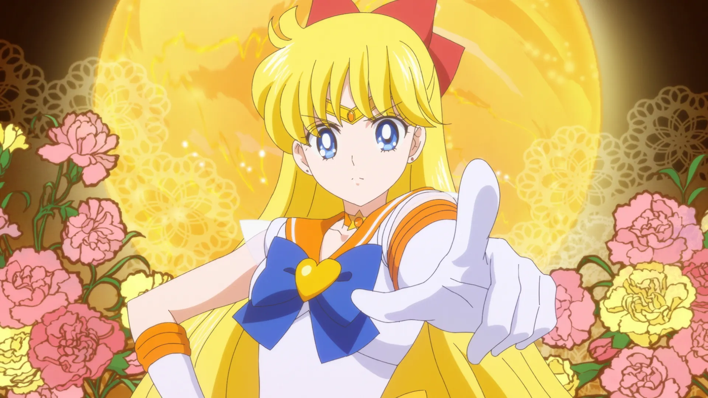
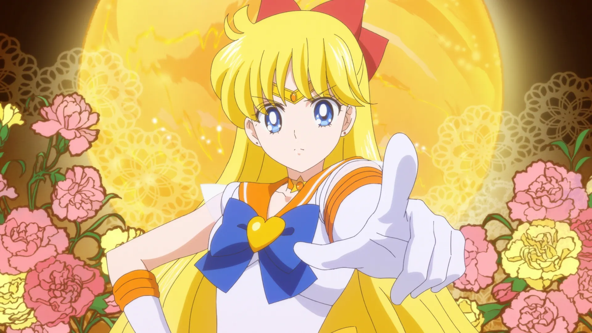

Salor Moon Galexy
Salor Moon Audio
Salor Moon Video
Salor Moon
Usagi is first introduced as living the life of a normal teenage schoolgirl in 20th-century Tokyo. Although well-meaning, she is an underachieving, accident-prone crybaby. One day, Usagi encounters a mysterious cat with a crescent moon on its forehead, who later reveals herself to be Luna, a mentor archetype who introduces Usagi to her new heroic role. Luna gives Usagi a magical brooch and explains how to use it to transform into Sailor Moon (the Guardian of Love and Justice); she tells Usagi that she is a Sailor Guardian who must fight for peace and find the rest of the Sailor Guardians, as well as their princess. Usagi is a reluctant heroine at first,[6][7] she grows more confident and mature over time. As Sailor Moon, she sets out to fight the villains from her past life and to protect the Earth using the legendary Silver Crystal.
Learn More..Salor Mars & Jupiter
Later, the Queen sends her daughter, the Earth Prince, the four princesses of Mercury, Mars, Jupiter and Venus, and the entire court to be reincarnated on Earth in the future. Before dying and sending them to Earth in suspended animation, the Queen instructs Luna and Artemis to find the princesses so that they can become the future Sailor Senshi. At some point upon their arrival on Earth, Luna and Artemis split up so they can find the princesses faster. Luna was saved by Usagi, who was the reincarnation of Princess Serenity, when some boys were picking on her. Usagi noticed the bandage on her forehead. When she took it off, it revealed the credentials moon birthmark. Later, at her home in her room, Usagi discovered Luna standing there. She introduced herself to her and told her about her destiny as a future hero.

Salor Mercury & Salor Venus
Later, the Queen sends her daughter, the Earth Prince, the four princesses of Mercury, Mars, Jupiter and Venus, and the entire court to be reincarnated on Earth in the future. Before dying and sending them to Earth in suspended animation, the Queen instructs Luna and Artemis to find the princesses so that they can become the future Sailor Senshi. At some point upon their arrival on Earth, Luna and Artemis split up so they can find the princesses faster. Luna was saved by Usagi, who was the reincarnation of Princess Serenity, when some boys were picking on her. Usagi noticed the bandage on her forehead. When she took it off, it revealed the credentials moon birthmark. Later, at her home in her room, Usagi discovered Luna standing there. She introduced herself to her and told her about her destiny as a future hero.
 
Learn More..

Learn More..